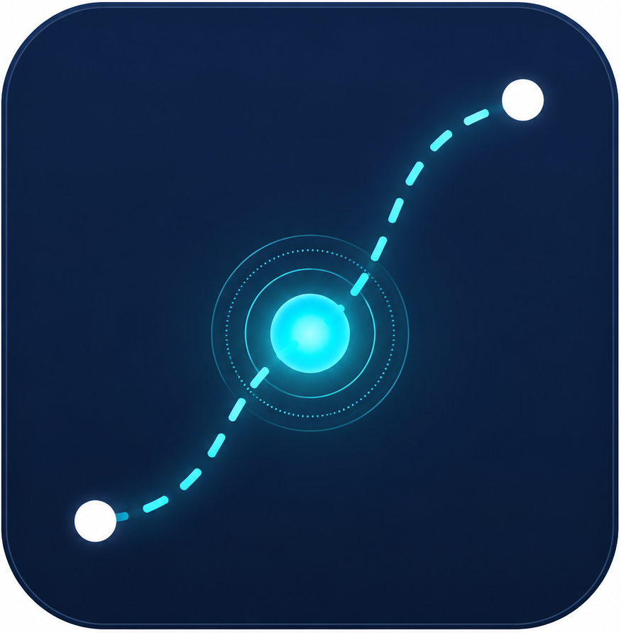

مسار.محرك ذكاء اصطناعي يحوّل بيانات مشروع البنية التحتية إلى قرار تشغيلي جاهز قبل بدء الحفر.
تفتقر الآلية الحالية إلى أدوات التنبؤ المسبق والذكاء المكاني.
قرارات ردّية لا استباقية: تُغلق الشوارع ويُكتشف الازدحام بعد وقوعه، دون تحليل مسبق لحجم الأثر المتوقع.
غياب مسارات بديلة مدروسة آلياً: لا تتوفر أداة تقترح تلقائياً أفضل توقيت ومسار بديل قبل التنفيذ.
تشتت الأثر على الأحياء: المشاريع المتزامنة تتراكم على نفس المحاور دون تنسيق زمني.
اعتماد كبير على البلاغ اليدوي: رصد أخطار الطريق يعتمد اليوم على مبادرة المواطن بدل الرصد الاستباقي.
مستهدفات رسمية نسعى لتحقيقها لرفع جودة الحياة وتخفيف العبء المروري.
"منصّة مسار — خدمة ذكاء اصطناعي تُضاف داخل خدمة تصاريح أعمال الحفر في منصة بلدي."
الخدمة مصمَّمة لتخدم طرفين: الجهات المنفّذة عبر طابور موحّد ينسّق مشاريعها، والمواطن عبر رصد آلي لأخطار الطريق.
نموذج معادلات هيكلية (SEM): أسلوب تحليل رياضي وإحصائي متقدم (Structural Equation Modeling) يدرس العلاقات السببية المعقدة لفهم وتحليل الأثر المروري بدقة عالية.
نوع المشروع (حفر/صيانة)
الموقع
المدة
نسبة تقليص مسارات السير
معدل التدفق المروري الحالي
مستوى الازدحام المتوقع
الأحياء المتأثرة
الوقت المفقود
نظام متكامل يربط البيانات بالقرارات الذكية في الوقت الفعلي.
بيانات المشروع ونظام المسح الجوي وبيانات مرورية.
نموذج يربط نسبة إغلاق المسار بزمن الرحلة الإضافي.
خريطة تفاعلية بتدرج لوني حسب شدة الازدحام ومسارات بديلة.
أفضل نافذة لبدء العمل، مع مقارنة حية.
طابور موحّد يعرض طلبات الجهات ويكشف التعارض.
عرض الأخطار المرصودة آلياً ونموذج إبلاغ مبسّط.
صُمم "مسار" ليتجاوز التوقعات ويحقق التميز في جميع أبعاد التقييم الرسمية.
يقدم مخرجات قابلة للقياس تحسن انسيابية الحركة المرورية جذرياً.
يحوّل نموذج بحثي معقد (SEM) إلى محرك قرار تشغيلي ذكي ومبسط.
يتكامل تقنياً ونظامياً مع منصة "بلدي" ولائحة تراخيص الحفريات (TIS) دون الحاجة لمنصات جديدة.
تشغيل فوري يعتمد على "المسح الجوي" كخط أساس، مع قابلية التوسع لربطه بحساسات المراقبة الحية مستقبلاً.
واجهات تفاعلية متكاملة تحاكي طبقة البيانات، محرك التنبؤ، ولوحة اتخاذ القرار.
قصة مترابطة تبدأ من رصد نقطة الألم وصولاً إلى إصدار التوصية التشغيلية الآلية.
كيف يتكامل مسار مع الأنظمة القائمة لإنتاج قرارات دقيقة.
خط الأساس دون حاجة لبنية تحتية مثبّتة.
معايرة حية مستقبلية لتحسين الدقة تدريجياً.
دمج الطبقتين لإنتاج القرار التشغيلي.
أرقام تعكس التحسن الكبير في جودة الحياة وكفاءة المشاريع.
تحسن في دقة توقع الازدحام بشكل استباقي
تقليل زمن الرحلة الإضافي للسكان في مناطق المشاريع